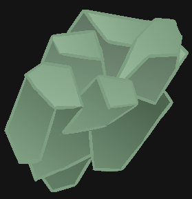

CapBerryl

Info
Well, all I can say about it, is that I don't think I can say much about it.
I were working solo on it, so call me Full-Stack-Man.
What technology it has:
- Searching algorithms - In this project, I used Taboo Search with multiple variations
- Complex Data structure
- Entire GUI
- Event-Based System
- UID system
- Read Write to files
- Backup system
Tools used:
- Qt Creator (C++)
- XXHash library
What I learned from it:
- Idea of what searching algorithms are
- Making good GUI
- That the data structures are exponentially more difficult the more complex they are
- Responsibility for my actions
- No excuses
My biggest mistakes:
- Disproportional amount of work between time frames
- Code smells smell really bad the longer they are in the code